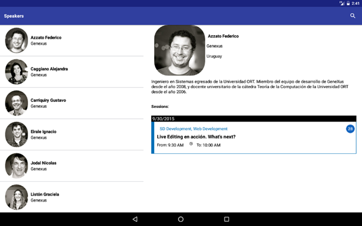
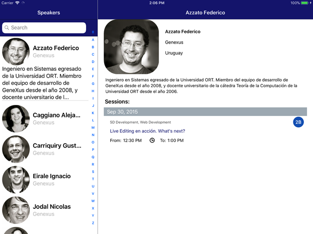
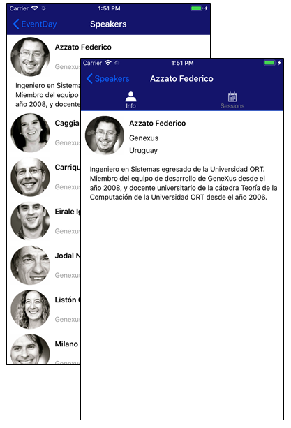
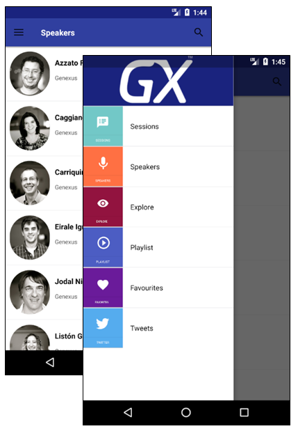
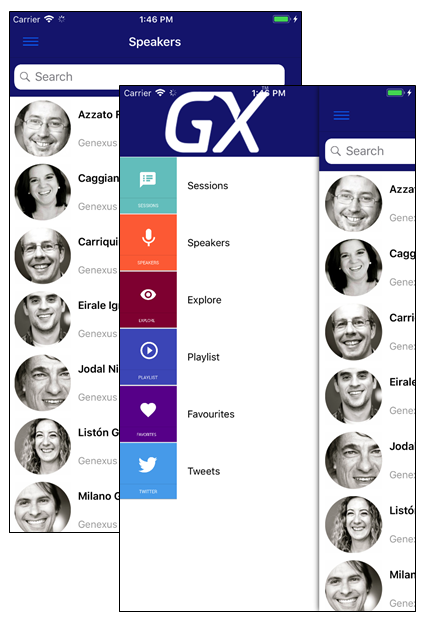
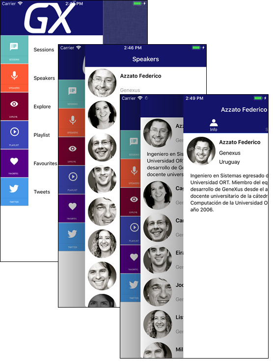

| Default | Split or Flip is automatically selected depending on the screen size. Usually Flip is for phones and Split is for tablets. This is the default value. |
| Flip | Detail information is displayed on a separate screen once an item is selected in List. |
| Split | List and Detail information is displayed on the same screen. This value is ignored when running on phones. |
Generators: Android, Apple
Level: Platforms node > Platform
Depending on the target device platform features (OS, Size, OS version) you may want to vary how the user interacts and, more specifically, how the user navigates your app. To achieve this, GeneXus provides the Navigation Style property that allows you to change this behavior at the platform level.
It is important to point out that you can only define one navigation style in our application for each possible combination of the above characteristics.
This property applies only at design-time.
The information is divided into two sections on the screen. As shown in the picture below, there is a panel on the left (in this case, a list of speakers) and the main area is on the right. Note that the orientation is landscape. If the device were in portrait mode, the only area shown would be the main one, and the left one would be hidden until you made it visible by sliding to the right. In the case of running it on a Smartphone device, the Split value will be ignored and the default value will be assumed.
Android

Apple

|
Android
|
Apple  |
It works on Tablets and Smartphones. The menu is always available through a button on the upper left corner, or by sliding to the right. More information.
|
Android  |
Apple  |
It works on Tablets and Smartphones. As shown in the picture below, the main menu is displayed in the left area, the actual panel is shown on the right, and the last navigated panel is in the middle. When you select an element from the main menu, the cascade navigation panels are reset. The main menu is always accessible.

This property is available as of GeneXus X Evolution 2